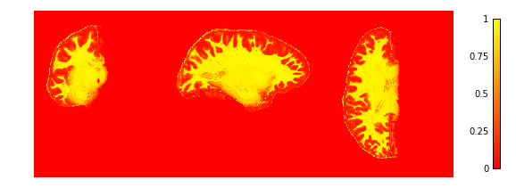

Note
Click here to download the full example code
Cortical depth estimation from MGDM segmentation¶
This example shows how to obtain a cortical laminar depth representation from an MGDM segmentation result with the following steps:
- Get a segmentation result from the tissue_classification example
- Extract the cortex of the left hemisphere with
nighres.brain.extract_brain_region() - Cortical reconstruction with CRUISE
nighres.cortex.cruise_cortex_extraction()[1] - Anatomical depth estimation trough
nighres.laminar.volumetric_layering()[2]
Important note: this example assumes you have run the tissue classification example first (example_tissue_classification.py)
Import and point to previous example¶
First we import nighres and the os module to set the output directory
Make sure to run this file in a directory you have write access to, or
change the out_dir variable below.
import nighres
import os
in_dir = os.path.join(os.getcwd(), 'nighres_examples/tissue_classification')
out_dir = os.path.join(os.getcwd(),
'nighres_examples/cortical_depth_estimation')
We also try to import Nilearn plotting functions. If Nilearn is not installed, plotting will be skipped.
skip_plots = False
try:
from nilearn import plotting
except ImportError:
skip_plots = True
print('Nilearn could not be imported, plotting will be skipped')
Now we pull the MGDM results from previous example
segmentation = os.path.join(in_dir, 'sub001_sess1_mgdm-seg.nii.gz')
boundary_dist = os.path.join(in_dir, 'sub001_sess1_mgdm-dist.nii.gz')
max_labels = os.path.join(in_dir, 'sub001_sess1_mgdm-lbls.nii.gz')
max_probas = os.path.join(in_dir, 'sub001_sess1_mgdm-mems.nii.gz')
if not (os.path.isfile(segmentation) and os.path.isfile(boundary_dist)
and os.path.isfile(max_labels) and os.path.isfile(max_probas)) :
print('This example builds upon the example_tissue_segmentation.py one')
print('Please run it first')
exit()
Region Extraction¶
Here we pull from the MGDM output the needed regions for cortical reconstruction: the GM cortex (‘region’), the underlying WM (with filled subcortex and ventricles, ‘inside’) and the surrounding CSF (with masked regions, ‘background’)
cortex = nighres.brain.extract_brain_region(segmentation=segmentation,
levelset_boundary=boundary_dist,
maximum_membership=max_probas,
maximum_label=max_labels,
extracted_region='left_cerebrum',
save_data=True,
file_name='sub001_sess1_left_cerebrum',
output_dir=out_dir)
Tip
in Nighres functions that have several outputs return a
dictionary storing the different outputs. You can find the keys in the
docstring by typing nighres.brain.mp2rage_extract_brain_region? or
list them with cortex.keys()
To check if the extraction worked well we plot the GM and WM probabilities.
You can also open the images stored in out_dir in
your favourite interactive viewer and scroll through the volume.
Like Nilearn, we use Nibabel SpatialImage objects to pass data internally. Therefore, we can directly plot the outputs using Nilearn plotting functions .
if not skip_plots:
plotting.plot_img(cortex['region_proba'],
vmin=0, vmax=1, cmap='autumn', colorbar=True,
annotate=False, draw_cross=False)
plotting.plot_img(cortex['inside_proba'],
vmin=0, vmax=1, cmap='autumn', colorbar=True,
annotate=False, draw_cross=False)

CRUISE cortical reconstruction¶
Next, we use the extracted data as input for cortex reconstruction with the CRUISE algorithm. CRUISE works with the membership functions as a guide and the WM inside mask as a (topologically spherical) starting point to grow a refined GM/WM boundary and CSF/GM boundary
cruise = nighres.cortex.cruise_cortex_extraction(
init_image=cortex['inside_mask'],
wm_image=cortex['inside_proba'],
gm_image=cortex['region_proba'],
csf_image=cortex['background_proba'],
normalize_probabilities=True,
save_data=True,
file_name="sub001_sess1_left_cerebrum",
output_dir=out_dir)
Now we look at the topology-constrained segmentation CRUISE created
if not skip_plots:
plotting.plot_img(cruise['cortex'],
vmin=0, vmax=2, cmap='cubehelix', colorbar=True,
annotate=False, draw_cross=False)
Volumetric layering¶
Finally, we use the GM/WM boundary (GWB) and CSF/GM boundary (CGB) from CRUISE to compute cortical depth with a volume-preserving technique
depth = nighres.laminar.volumetric_layering(
inner_levelset=cruise['gwb'],
outer_levelset=cruise['cgb'],
n_layers=4,
save_data=True,
file_name="sub001_sess1_left_cerebrum",
output_dir=out_dir)
Now we look at the laminar depth estimates
if not skip_plots:
plotting.plot_img(depth['depth'],
vmin=0, vmax=1, cmap='autumn', colorbar=True,
annotate=False, draw_cross=False)
If the example is not run in a jupyter notebook, render the plots:
if not skip_plots:
plotting.show()
References¶
| [1] | Han et al (2004) CRUISE: Cortical Reconstruction Using Implicit Surface Evolution, NeuroImage, vol. 23, pp. 997–1012. |
| [2] | Waehnert et al (2014) Anatomically motivated modeling of cortical laminae. DOI: 10.1016/j.neuroimage.2013.03.078 |
Total running time of the script: ( 0 minutes 0.000 seconds)